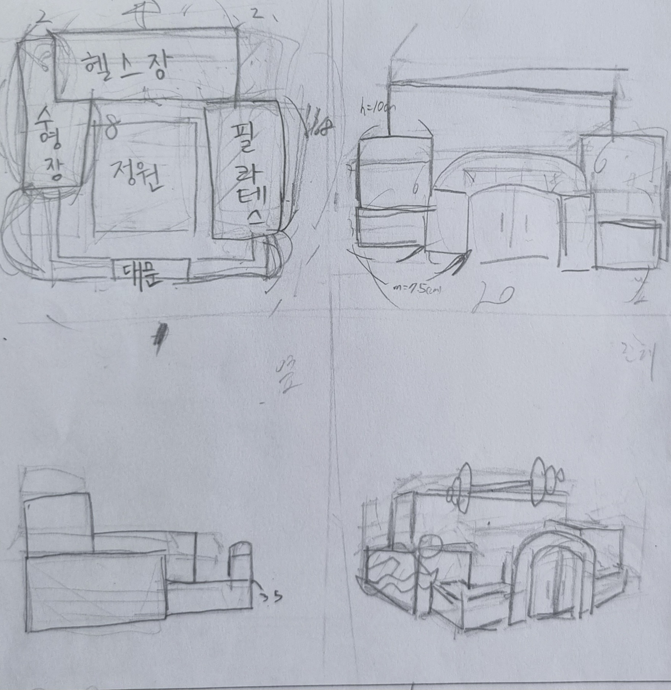

노인들은 나이가 들면서 근육량, 근밀도 저하가 일어나며 고혈압, 당뇨병이 일어날 가능성이 높기때문에 우리 사회에 노인들을 위한 헬스장은 필요하다.
따라서 우리는 이런 시설들이 잘 갖춰진 호그벡 마을을 참조하게 되었다. 초록빛 나무와 따뜻한 색상의 건물이 조화롭게 어울러진 싱그러운 풍경을
볼 수 있으며 다양한 크기의 건물들이 모여있는 마을의 특징을 횔용하였다.
우리 조의 건물 디자인 스케치

우리 조의 건축물은 5가지의 부분으로 나눌 수 있다. 수영장, 헬스장, 필라테스, 정원, 대문으로 나눌 수 있다.
재료는 철근 콘크리트로 기존의 콘크리트가 가졌던 인장력이 압축력보다 상대적으로 아주 약한 문제를 해결하였다.
우리는 이외에도 빌라 사보아의 건축가, 르꼬르 뷔지에의 근대 건축 5원칙 중에서 1가지인 옥상정원을 수영장, 헬스장, 필라테스 건물 위에
조성하였다. 이에 따라 어르신들이 정원 외에도 옥상에서도 녹지를 즐길 수 있도록 하였고, 담장 벽돌을 갈색으로 하여 따뜻한 느낌을 주었다.
녹지와 갈색의 담장 벽돌은 호그벡 마을 디자인에서 큰 영감을 얻었다.
*해당 건물은 황금비를 사용했으니 잘 찾아보기를 바랍니다.*
百聞不如一見
해당 프로젝트는 부산 남일고등학교의 미술 수행 평가의 일환으로 제작되었습니다.